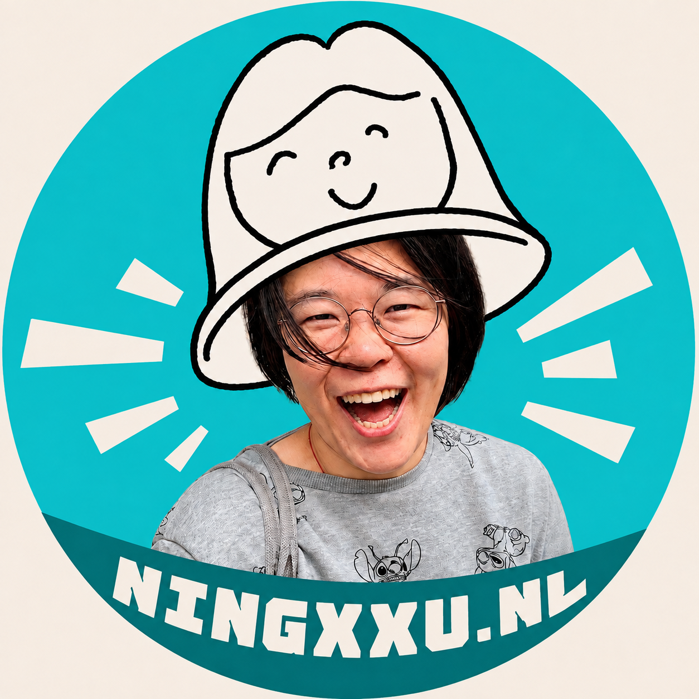

👋 你好！我是 Ning（发音就像英语 "Good Eve-ning" 里的 "ning"）。我是一名移民，也是一位母亲。我用英语和荷兰语交织思考，而我的母语是杭州话和普通话。我总是在琢磨些什么，有时会一边跳 shuffle dance 一边想。我曾经是一个很强硬的人，现在正在练习变得更开放、更柔软。与此同时，我也曾在不同的行业和文化环境中打造产品、组建团队。这些天，我在探索语言与身份认同的交汇处。
NING XU
探索
联系
instagram:
ningxxu.nl
whatsapp:
+31(0)639848055
微信:
ningxxu_helanyuke

流动的语言与归属感 🥭 食物与语言工作坊：追寻“mango/芒果”、“金桔/kumquat”这样的词语，看食物如何穿梭于不同地域、语言与文化之间 🧭 移民与身份认同研究：探索语言、归属感、歧视与家庭生活如何塑造移民的经历 🌱 中文荷兰语课：理解荷兰语，并自在地将它运用到日常生活中